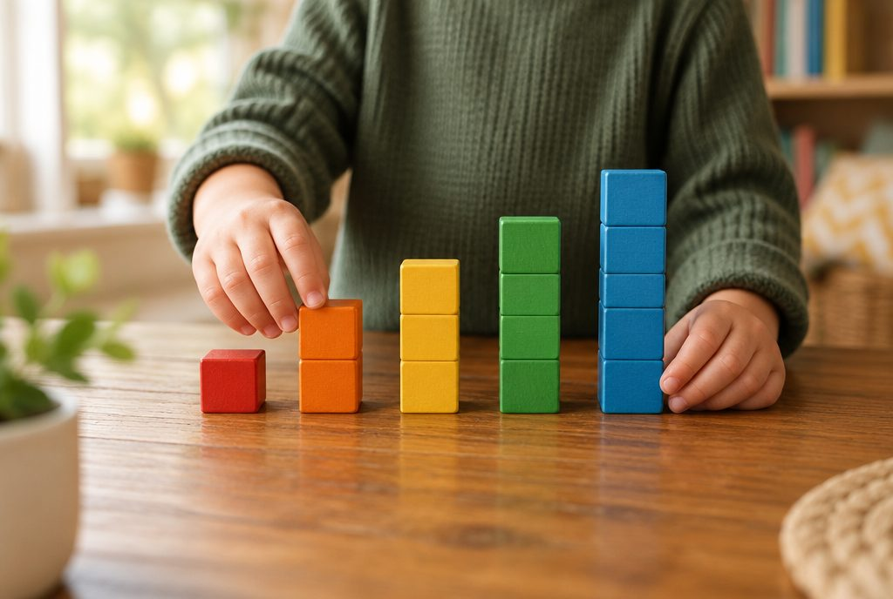

막대그래프로 한눈에 비교해 볼까?

우리 반 친구들이 가장 좋아하는 과일은 무엇일까요? 숫자가 가득한 표보다 막대의 길이로 보면 어느 쪽이 많은지 금방 알 수 있어요.
막대그래프는 수량을 막대로 나타내요
조사한 자료의 수량을 막대의 길이로 나타낸 그래프를 막대그래프라고 해요.
막대가 길수록 수량이 많고, 짧을수록 수량이 적어요. 그래서 여러 항목의 크기를 한눈에 비교할 수 있어요.
표는 정확한 수를 알아보기 쉽고, 막대그래프는 많고 적음을 비교하기 쉬워요.
좋아하는 과일 조사: 사과 8명, 귤 5명, 포도 7명, 딸기 10명 → 막대가 가장 긴 딸기를 가장 많은 친구가 좋아해요.
가로, 세로, 눈금을 먼저 살펴요
막대그래프에는 제목, 가로, 세로, 눈금이 있어요. 과일 그래프에서 가로는 과일 이름을, 세로는 학생 수를 나타내요.
그래프를 읽을 때는 세로 눈금 한 칸이 얼마를 나타내는지 먼저 확인해요. 한 칸이 1명일 때도 있고, 2명이나 5명일 때도 있어요.
막대 끝이 닿은 눈금을 읽으면 그 항목의 수량을 알 수 있어요.
세로 눈금 5칸이 10명을 나타내면 한 칸은 10 ÷ 5 = 2(명)이에요. 막대가 4칸이면 2 × 4 = 8(명)이에요.
이렇게 그려요: 막대그래프 그리기
① 가로와 세로에 각각 무엇을 나타낼지 정해요. ② 가장 큰 수량까지 나타낼 수 있도록 눈금 한 칸의 크기와 눈금의 수를 정해요.
③ 항목마다 수량에 맞게 막대를 그려요. 막대의 폭은 모두 같게 해요. ④ 마지막으로 알맞은 제목을 붙여요.
막대는 세로로 세워 그려도 되고, 가로로 눕혀 그려도 돼요. 눕혀 그리면 가로에 수량을, 세로에 항목을 나타내요.
가장 큰 수가 10명이고 눈금 한 칸을 1명으로 하면 세로 눈금은 적어도 10칸이 필요해요. 사과는 8칸, 귤은 5칸, 포도는 7칸, 딸기는 10칸 높이로 막대를 그려요.
그래프에서 알 수 있는 것을 찾아요
막대그래프를 보면 가장 많은 것과 가장 적은 것, 많은 순서를 바로 알 수 있어요.
두 막대의 칸 수 차이를 세면 두 항목이 얼마나 차이 나는지도 알 수 있어요.
그래프를 보고 '간식으로 딸기를 가장 많이 준비하면 좋겠다.'처럼 생활에 쓸 생각을 말해 볼 수도 있어요.
딸기 10명, 귤 5명 → 딸기가 귤보다 10 − 5 = 5(명) 더 많아요. 많은 순서는 딸기, 사과, 포도, 귤이에요.
궁금한 것을 조사해 그래프로 나타내요
궁금한 점이 생기면 먼저 무엇을 알고 싶은지 정하고, 친구들에게 묻거나 직접 세어 자료를 모아요.
모은 자료는 표로 정리한 다음 막대그래프로 나타내요. 합계를 구해 조사한 사람 수와 같은지 확인하면 실수를 줄일 수 있어요.
마지막으로 그래프를 보고 알게 된 점을 정리해요.
알고 싶은 것: 우리 반 친구들의 등교 방법 → 걷기 12명, 자전거 4명, 버스 6명, 자동차 3명(합계 25명) → 걸어서 오는 친구가 가장 많아요.
핵심 낱말
- 막대그래프
- 조사한 자료의 수량을 막대의 길이로 나타낸 그래프
- 눈금
- 그래프에서 수량을 읽을 수 있도록 같은 간격으로 나눈 칸
- 항목
- 조사한 내용을 나눈 하나하나의 종류(예: 사과, 귤, 포도)
- 합계
- 모든 항목의 수량을 더한 값
한 줄 정리
- 막대그래프는 조사한 수량을 막대의 길이로 나타낸 그래프예요.
- 그래프를 읽을 때는 눈금 한 칸이 얼마인지 먼저 확인해요.
- 막대그래프를 보면 많고 적음, 순서, 차이를 한눈에 비교할 수 있어요.
학교 교육과정 연결
- [4수04-01] 자료를 수집하여 그림그래프나 막대그래프로 나타내고 해석할 수 있다.
- [4수04-03] 탐구 문제를 해결하기 위해 자료를 수집, 정리하여 막대그래프나 꺾은선그래프로 나타내고 해석할 수 있다.